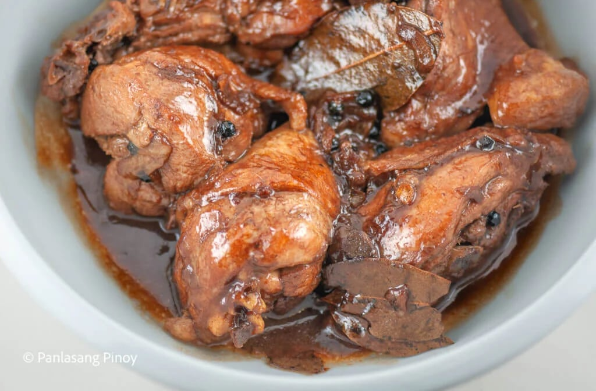
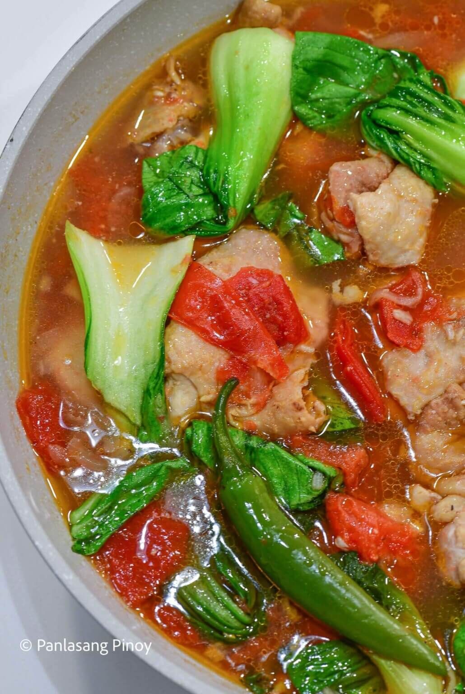
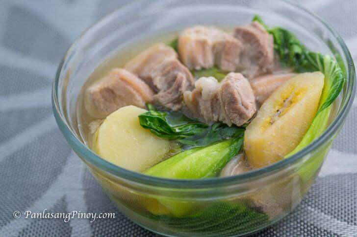
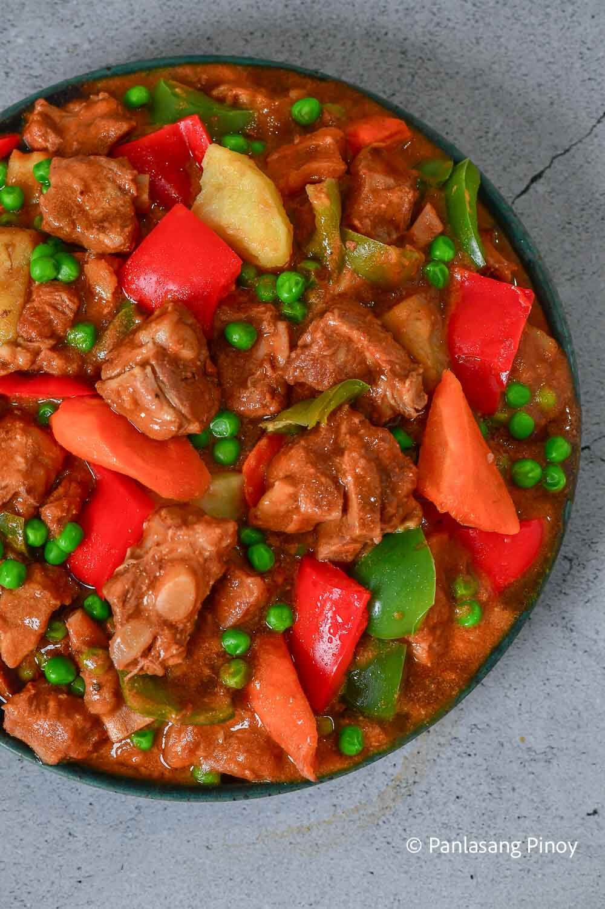
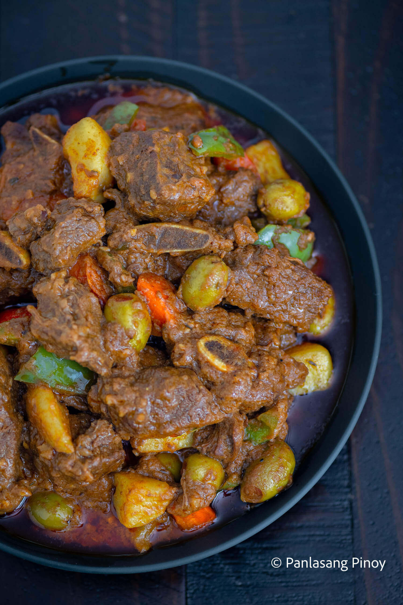
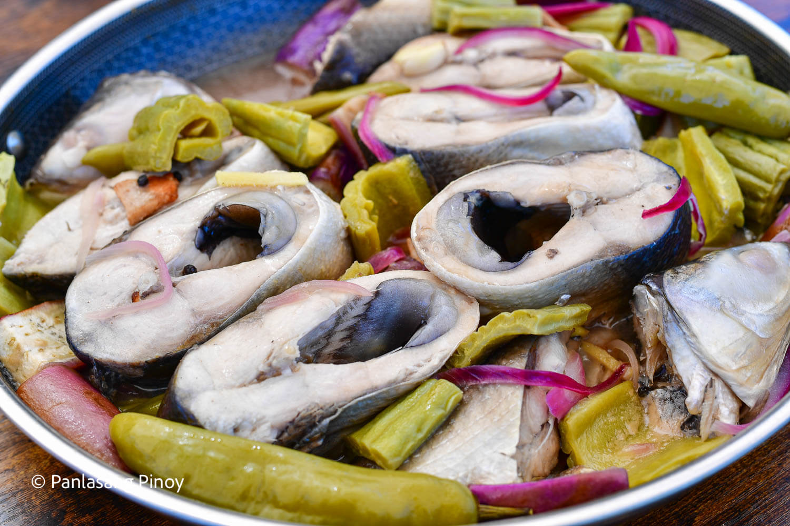
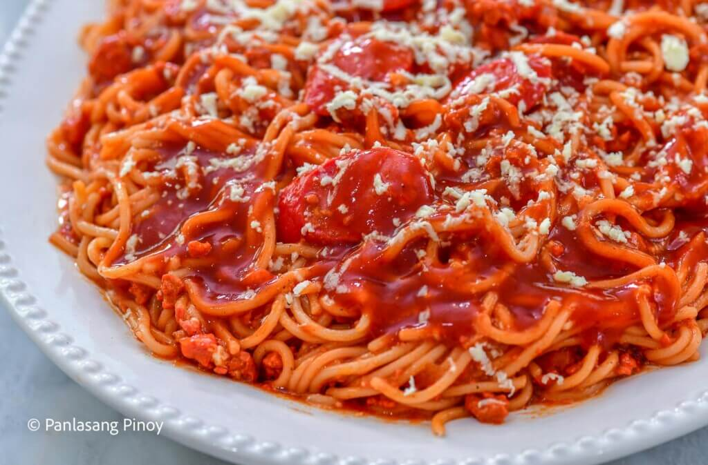
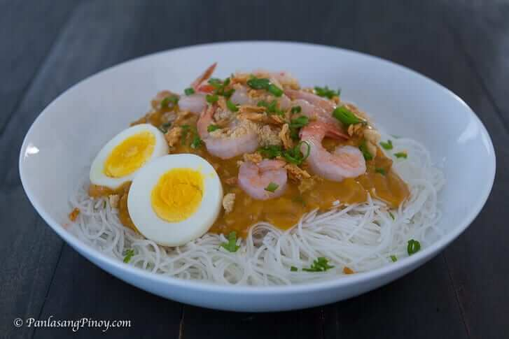

A soul-warming Filipino ginger chicken broth.

A comforting Filipino glass noodle soup with tender chicken and sweet patola.

Creamy chicken stew with coconut milk and sweet pineapple.

Chicken slow-braised in a savory-tangy soy and vinegar glaze.

Chicken stewed in a light, tangy broth of fresh, sautéed tomatoes.

The unofficial national dish of the Philippines.

Hearty pork stew with vegetables in a clear, savory broth.

Sweet and savory braised pork hocks with salted black beans.

Rich tomato pork stew thickened with liver spread and melted cheese.

Spicy pork stew simmered in creamy coconut milk and shrimp paste.

A rich beef stew in a savory tomato and liver sauce, topped with cheese and vegetables.

A savory peanut stew with tender beef and crisp vegetables, served with salty shrimp paste.

Fried fish simmered in a savory tomato and egg sauce.

Authentic sour soup with fresh vegetables.

Milkfish stewed in a tangy vinegar and ginger broth.

Crispy Filipino fritters made with tiny silverfish and fresh vegetables.

Comforting noodle soup with canned sardines and sweet sponge gourd.
A soul-warming Filipino ginger chicken broth.
A comforting Filipino glass noodle soup with tender chicken and sweet patola.
Creamy chicken stew with coconut milk and sweet pineapple.
Crispy Filipino fritters made with tiny silverfish and fresh vegetables.
Comforting noodle soup with canned sardines and sweet sponge gourd.

The classic sweet-style Pinoy spaghetti.

Perfect for long life and celebrations.
Comforting noodle soup with canned sardines and sweet sponge gourd.
A comforting Filipino glass noodle soup with tender chicken and sweet patola.

Rice noodles smothered in a thick, savory shrimp sauce and loaded with smoky toppings.